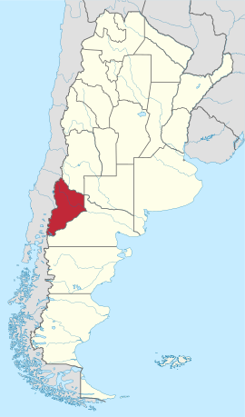

Provincia del Neuquén (según el texto de la Constitución provincial) o, más brevemente, Neuquén es una de las veintitrés provincias que hay en la República Argentina. A su vez, es uno de los veinticuatro estados autogobernados o jurisdicciones de primer orden que conforman el país, y uno de los veinticuatro distritos electorales legislativos nacionales.
Su capital y ciudad más poblada es la homónima ciudad de Neuquén capital. Está ubicada al noroeste de la Región Patagónica y al oeste de la Región del Comahue, la cual ocupa la mitad sur del país; limita al norte con Mendoza (parte de su frontera la forma el río Colorado), al sureste con Río Negro (gran parte de esta frontera la forma el río Limay) y al oeste con Chile, con las regiones chilenas de Maule, Ñuble, Bío-Bío, La Araucanía, Los Ríos y Los Lagos, cuyos límites están determinados por la divisoria de agua y el criterio de altas cumbres de la cordillera de los Andes. Los límites de las provincias de La Pampa, Río Negro, Mendoza y Neuquén, se encuentran en un punto, en la intersección del río Colorado con el meridiano 68º 15' O
La provincia toma su nombre del río Neuquén. Asimismo y según las fuentes, el término Neuquén proviene del mapudungun Newenken que significa "correntoso", o de la voz araucana Ñedquén que significa "atrevido, arrogante, audaz".8
Una de las primeras alusiones se encuentra en las crónicas de extranjeros del sacerdote alemán Bernardo Havestadt, en el año 1752, quien en su diario de travesía cuenta que pernoctó del otro lado de un río amenazador llamado Neuquén
La bandera provincial fue diseñada por Mario Aldo Mástice y adoptada por la Ley provincial n.º 1817 del 31 de octubre de 198910e izada simultáneamente en toda la provincia por primera vez el 28 de noviembre. Tiene tres franjas verticales (de izquierda a derecha: celeste, blanco y celeste) y en el centro (franja blanca) lleva algunos elementos que aparecen en el escudo de dicha provincia. Las tres franjas simbolizan a Neuquén como una provincia de Argentina, en la franja blanca puede apreciarse una tira de laureles con la Estrella Federal en su centro, las estrellas, la silueta del Pehuén y el Volcán Lanín
Artículo principal: Himno de la Provincia del Neuquén
Artículo principal: Escudo de Neuquén
Por Ley Provincial n.º 2465, del 24 de agosto de 2004 se declaró a la Mutisia (Mutisia decurrens) como flor de la provincia del Neuquén.11La Mutisia es una flor característica de la región cordillerana y parques nacionales, que llama la atención por su exótica belleza y colores naranjas, morados y blancos, como una pupila de fuego que se asoma entre el verde ramaje de los ñires, radales y demás árboles autóctonos. Ha sido desde hace tiempo incorporada a la leyenda regional y cantada por los poetas, además de figurar desde hace muchos años en las artes plásticas a nivel regional
La araucaria o pehuén es otro de sus símbolos. Este árbol se encuentra en la zonas cordilleranas de casi toda la provincia, siendo una especie perteneciente al género de coníferas, con su característico fruto, los piñones, que se conoce y se consume en toda la provincia. Este árbol se encuentra tanto en la bandera neuquina como también en su escudo
El Gobierno de la Provincia de Neuquén es el poder ejecutivo a cargo de la Provincia de Neuquén, en Argentina.
El Gobernador de la Provincia de Neuquén se elige cada cuatro años en comicios libres, secretos y obligatorios,
un sistema de segunda vuelta y con posibilidad de una sola reelección
La provincia se encuentra dividida en 16 departamentos. A continuación se mencionan en orden alfabético con su cabecera histórica entre paréntesis
La provincia se encuentra dividida en 16 departamentos. A continuación se mencionan en orden alfabético con su cabecera histórica entre paréntesis
alumine
Aluminé (Aluminé)
Añelo (Añelo)
Catán Lil (Las Coloradas)
Chos Malal (Chos Malal)
Collón Curá (Piedra del Águila)
Confluencia (Neuquén)
Huiliches (Junín de los Andes)
Lácar (San Martín de Los Andes)
Loncopué (Loncopué)
Los Lagos (Villa La Angostura)
Minas (Andacollo)
Ñorquín (El Huecú)
Pehuenches (Buta Ranquil)
Picún Leufú (Picún Leufú)
Picunches (Las Lajas)
Zapala (Zapala)
Esta división departamental apenas se menciona en la Constitución de la Provincia vigente desde 2006,13 la que sí es taxativa con respecto a la definición y clasificación de municipios y comisiones de fomento.
La Región Patagónica fue creada por el tratado firmado en la ciudad de Santa Rosa el 26 de junio de 1996, sus fines son expresados en el artículo 2 del tratado: La región tendrá como objetivo general proveer al desarrollo humano y al progreso económico y social, fortaleciendo las autonomías provinciales en la determinación de las políticas nacionales, en la disponibilidad de sus recursos y el acrecentamiento de su potencial productivo, conservando la existencia de beneficios diferenciales que sostengan el equilibrio regional.
Las provincias que la integran son: La Pampa, Neuquén, Río Negro, Chubut, Santa Cruz y Tierra del Fuego, Antártida e Islas del Atlántico Sur, abarcando el subsuelo, el Mar Argentino adyacente y el espacio aéreo correspondiente. Los órganos de gobierno de la Región son la Asamblea de Gobernadores y el Parlamento Patagónico, como Órgano Ejecutivo la Comisión Administrativa y como Órgano de Asesoramiento y Consulta el Foro de Superiores Tribunales de Justicia de la Patagonia
Las provincias de Río Negro y del Neuquén mantienen diferencias limítrofes. En 1883 se fijó la línea limítrofe entre los dos entonces territorios nacionales como prolongación de la línea que divide a La Pampa y Mendoza, llamada Meridiano X Oeste de Buenos Aires (68º 15' O). Debido a la mejora de los medios de medición, para 1966 Río Negro sostuvo que la línea debería correrse unos 12 kilómetros al oeste de la fijada en 1883 y reclamó una franja de terreno de unas 193 000 hectáreas con 110 km lineales. Neuquén rechazó el reclamo rionegrino aduciendo que no se podía ir modificando el límite cada vez que apareciera un nuevo adelanto para medir la ubicación del meridiano. En 1969, el gobierno del general Juan Carlos Onganía le dio la razón a Neuquén por el decreto-ley n.º 18.501, decreto que fue rechazado por Río Negro al ser hecho por un gobierno de facto. La zona en disputa incluye las localidades de Octavio Pico y San Patricio del Chañar
Ambas provincias también disputan la isla de Manzano, que está ubicada en la margen izquierda del río Neuquén, a pocos metros del casco urbano de Barda del Medio (localidad rionegrina) y frente a Vista Alegre (localidad neuquina). Debido a que el brazo de río que separa la isla del territorio rionegrino se secó, ésta perdió su condición de isla y es ahora reclamada por Río Negro
Diversas islas del río Limay también se encuentran en disputa entre Neuquén y Río Negro, entre ellas la isla Gobernación unida hoy a la también disputada isla Chica
En el lago Nahuel Huapi ambas provincias sostienen una línea limítrofe divergente, el límite que corre desde el río Limay hasta Puerto Blest es objetado por Río Negro, que sostiene que debe pasar por el brazo Machete, lo que dejaría a la isla Victoria (la Nahuel Huapi o isla del Nahuel –o jaguar–, que oficialmente fue llamada por los colonos criolloeuropeos isla Victoria) en territorio rionegrino
La Provincia de Río Negro expresa en el artículo n.º 8 de su constitución sancionada en 1988 el rechazo a la ley de facto n.º 18.501, incluyendo el reclamo de la isla Victoria
ocupación humana del actual territorio de la provincia de Neuquén está estimada entre 14.000 y 17.000 años antes del presente. Esas estimaciones están basadas en fechados radiocarbónicos y datos moleculares.20
Los restos de esas ocupaciones se preservan en diferente medida de acuerdo a una serie de factores tafonómicos.
Las evidencias más antiguas en la provincia de Neuquén se hallaron en cuevas o abrigos rocosos que actuaron como protección para esos materiales.21
Los objetos encontrados en la cueva de Chenque Haichol, cerca de Las Lajas, indican que esa zona fue ocupada al menos desde el 7000 AC.2223 Los arqueólogos han excavado allí numerosa evidencia material que da cuenta de sucesivas ocupaciones a lo largo del tiempo. En las primeras ocupaciones se registraron puntas líticas trangulares y lanceoladas y raspadores y retocadores de hueso. También manos de moler y evidencias de caza de guanaco.
el 5000 A.P. se verifica el aprovechamiento intensivo de los piñones de araucaria y de otros recursos procedentes de distintos ambientes.
Se han encontrado indicios que alrededor del 1200 años DC los habitantes de la zona sazonaban sus comidas con la sal extraída de la mina de Troquico, en el norte del departamento Ñorquín, haciendo galerías de hasta 40 metros de profundidad utilizando hachas de piedra con mangos de madera.
Los primeros habitantes de la actual provincia del Neuquén provinieron desde los cuatro puntos cardinales, especialmente desde los pasos de la cordillera de los andes desde el actual Chile, desde el sur de la actual provincia de Mendoza y desde la pampa. Estos pueblos tenían una gran movilidad y se desplazaban dentro y fuera de los límites de la provincia según las estaciones del año, las condiciones climáticas y la abundancia de caza y alimento.
Las evidencias más antiguas de cerámica corresponden a los sitios Gubevi y Michacheo, con antigüedades de 1878 +43 años AP y 1860 ±40 años AP respectivamente.2526 En la zona se han encontrado restos alfareros, y en conjunto con poáceas comestibles del género Bromus, que corresponden a la Cultura Pitrén,27 siendo esta considerada como los ancestros de los mapuche actuales, emplazados desde el río Biobío por el norte, hasta Puerto Montt por el sur de la vertiente occidental de la Cordillera de los Andes.28 Previo al proceso de araucanización documentado alrededor del siglo XVI realizado por los ahora denominados mapuches sobre los pueblos asentados en las distintas áreas de la provincia, se pueden distinguir varias etnias: picunche; pehuenche y puelche, huarpes; tehuelche septentrionales y huilliche.
Las primeras exploraciones europeas ocurrieron de parte de los españoles en el siglo XVI alcanzando la zona del lago Huechulafquen, hasta allí llegó en 1551 Jerónimo de Alderete buscando la Ciudad de los Césares y aborígenes para reducirlos al régimen de encomienda. En 1553 se produjo la entrada de Francisco de Villagrán quien permaneció brevemente en las orillas del río Collón Curá.
En 1620 hubo una entrada por parte de Juan Fernández. Durante 1622 Jerónimo Luis de Cabrera y Garay partió desde Córdoba con 400 hombres a caballo llegando a la zona de la confluencia de los ríos Limay y Neuquén mientras buscaba la mítica ciudad de los Césares.30 En 1649 Diego Ponce de León derrotó a los mapuches a orillas del Huechulafquen aunque debió retirarse. Durante la segunda mitad del siglo XVII el padre Diego Rosales recorrió las orillas del Lago Nahuel Huapi y llegó hasta el volcán Lanín donde funda una misión jesuita en 1653. En 1670 el padre Nicolás Mascardi fundó la reducción de Nuestra Señora del Nahuel Huapi, a este fraile le siguieron los padres Zúñiga (1686), Guillelmo (1715), Havestadt (1751), Menéndez (1791) entre otros.
José Francisco de Amigorena realizó varias expediciones al sur de Mendoza entre 1779 y 1794 penetrando hasta el departamento Chos Malal.
En 1782 partiendo de Carmen de Patagones Basilio Villarino remontó el río Negro, el 23 de enero de 1783 llegó a la confluencia de los ríos Limay y Neuquén acampando en una isla,30 luego remontó el Limay hasta la confluencia con el Collón Curá, y desde ahí hasta el río Chimehuin
Algunos frutos introducidos por los misioneros prosperaron, de modo que ya a fines del siglo XVIII y durante la mayor parte del siglo XIX la cuenca del río Limay era conocida como el País de las Manzanas. Entre 1788 y 1792 el comandante Francisco Esquivel y Aldao realizó la primera campaña militar sobre el territorio del Neuquén, partiendo desde Mendoza recorrió 2000 km llegando hasta Peña Haichel (Las Lajas) y Picún Leufú.31 El cura franciscano Francisco Menéndez durante su segunda expedición llegó en 1791 al lago Nahuel Huapi a través del actual paso Pérez Rosales con la vieja ilusión de hallar la ciudad de los Césares
Justo Molina y Vasconcellos en 1805 exploró la región norte de la provincia33 y un año después Luis de la Cruz penetró desde Chile por el norte de Neuquén y llega hasta Córdoba.33
Los hermanos Pincheira desde 1819 a 1832 habitaron en la actual zona de Varvarco en el Departamento Minas,33 quienes alentaron a grupos borogas y ranqueles a realizar malones para el robo de ganado y su transporte a través de la ruta de la Rastrillada grande hacia los pasos de la cordillera de los Andes de la Provincia, con el objetivo de ser trocado en Chile
En 1833 llegó hasta la confluencia de los ríos Limay y Neuquén una expedición militar enviada por el gobernador de Buenos Aires Juan Manuel de Rosas, comandada por el coronel Ángel Pacheco y que había partido de la ciudad de Buenos Aires como parte de la campaña militar al desierto
Cuando se sancionó la Constitución de la provincia de Mendoza el 24 de diciembre de 1854, esta constitución incluyó a los territorios neuquinos como parte de esa provincia, lo cual fue confirmado en una nota del 5 de noviembre de 1862 en respuesta de las autoridades de esa provincia a una requisitoria del Ministerio del Interior.
La Ley N.º 28 del 17 de octubre de 1862, dispuso que todos los territorios nacionales existentes fuera de los límites o posesión de las provincias sean nacionales, hasta entonces las provincias de Buenos Aires y de Mendoza mantenían pretensiones sobre los territorios patagónicos
La ley n.º 215 del 13 de agosto de 1867 dispuso en su Art. 1: Se ocupará por fuerzas del Ejército de la República la ribera del Río Neuquén, desde su nacimiento en los Andes hasta su confluencia en el Río Negro en el Océano Atlántico estableciendo la línea en la margen septentrional del expresado río de Cordillera a mar. Esta ley corrió los límites de la nación hasta el río Negro, dejando fuera del territorio nacional a la mayor parte de la Patagonia, pero no tuvo efecto sino hasta la Conquista del Desierto. Por la ley N.º 947 del 5 de octubre de 1878, los límites de las tierras nacionales situadas al exterior de las fronteras de las provincias de Buenos Aires, Santa Fe, Córdoba, San Luis y Mendoza, son establecidos en el río Negro, desde su desembocadura en el océano Atlántico remontando su corriente hasta encontrar el grado 5º de longitud occidental del meridiano de Buenos Aires, por este hacia el norte, hasta su intersección con el paralelo 35º de latitud sur, por este paralelo hasta el meridiano 10º de longitud occidental de Buenos Aires, por este meridiano hacia el sur hasta la margen izquierda del río Colorado y desde allí remontando la corriente de este río hasta sus nacientes y continuando por el río Barrancas hasta la cordillera de los Andes. Quedando establecido el límite norte de la Patagonia con las demás provincias
La Gobernación de la Patagonia fue creada por la ley N.º 954, del 11 de octubre de 1878. Su territorio se extendía desde el límite fijado por la ley n.º 947 hasta el Cabo de Hornos. Su capital fue Mercedes de Patagones (hoy Viedma), el 21 de octubre fue designado su primer Gobernador, el coronel Álvaro Barros, quien procedió a la inauguración oficial de la Gobernación el 2 de febrero de 1879
En 1879, la denominada Conquista del Desierto dirigida por Julio Argentino Roca quebró la resistencia de los indígenas. En 1880 de las cinco divisiones que participaron en la mencionada campaña, la "IV División" bajo el mando del Coronel Mayor Manuel José Olascoaga, salida de Mendoza ingresó en el actual territorio de la provincia del Neuquén siendo así creados los fuertes de Campana Mahuida ( una decena de kilómetros al sur de Loncopué), Ñorquín y "IV División" (Chos Malal). El 8 de febrero de 1883 el V Regimiento de Caballería de Línea establece un fortín que luego da lugar a la población de Junín de los Andes, primera fundación en territorio neuquino
Al momento de la Conquista del Desierto, el antiguo territorio del Comoe (denominación antigua Mapuche del Neuquén) era dominado por los loncos (cabezas o "caciques") supremos, Purran jefe Pehuenche en el norte y Sayhueque en el sur (el Gobierno de las Manzanas), e Inacayal, quien rápidamente aceptó la ciudadanía argentina, en el centro oeste. Se considera que hacia 1885 había una población aproximada de 60 000 personas, entre la cordillera de los Andes y el río Limay y desde el río Colorado hasta el lago Nahuel Huapi. A la llegada del Ejército Argentino se hallaban dos asentamientos chilenos en el Departamento Minas, uno en las lagunas de Epulafquen y otro en Varvarco en donde vivían unas 600 personas dedicadas al pastoreo de ganado en tierras arrendadas a los pehuenches
En 1881 se firmó el tratado de límites entre la Argentina y Chile que aseguró definitivamente la posesión argentina de los territorios de la Patagonia oriental.
La Gobernación de la Patagonia fue luego dividida por la ley n.º 1.265 del 24 de octubre de 1882, creándose el Territorio de La Pampa Central, siendo el límite entre ambos los cursos de los ríos Agrio, Neuquén y Negro, quedando el actual territorio neuquino dividido entre los dos territorios
Por la ley n.º 1.532 del 16 de octubre de 1884, se crearon los Territorios Nacionales dividiendo las Gobernaciones de La Pampa y de la Patagonia, entre ellos el Territorio Nacional del Neuquén, estableciéndose por primera vez Neuquén como una jurisdicción territorial separada cuya capital fue inicialmente Campana Mahuida y posteriormente Chos Malal.
Manuel José Olascoaga fue el primer gobernador del Territorio Nacional de Neuquén, desde principios de 1885 hasta 1891.
En 1887 el entonces Coronel Napoleón Uriburu llegó a las costas del río Agrio y estableció el fuerte IV División en donde se formó un caserío a su alrededor y en el cual el Coronel Manuel José Olascoaga fundó la primera capital del territorio.36 Luego sobre la costa del río Neuquén el 4 de agosto de 1887 funda Chos Malal, designada por Decreto Nacional en 1887 capital de la provincia del Neuquén
Se fundó la localidad de Las Lajas un 8 de febrero de 1897 por Enrique Godoy.
Carlos Bouquet Roldán, gobernador del Territorio Nacional del Neuquén entre 1903 y 1906, propuso trasladar la capital desde Chos Malal a un poblado ubicado en la margen derecha del río Neuquén, llamado Confluencia, por su unión con el río Limay. Esta decisión generó fuertes rechazos, ya que en ese momento un sector de la sociedad consideraba que geopolíticamente era más conveniente un poblado cerca del límite con Chile.
En 1902 el ferrocarril cruzó hasta Confluencia (actual ciudad de Neuquén), que era en la época solo un caserío; y en 1913 llegó a Zapala
Por Decreto del 19 de mayo de 1904 se divide el territorio en 12 departamentos y en 1915 el Territorio del Neuquén se reorganiza políticamente en 16 departamentos.38
El 12 de septiembre de 1904 se funda oficialmente la ciudad de Neuquén.
La ciudad de Zapala festeja su fundación el día 12 de julio de 1913, fecha en que fue aprobada la subdivisión de lotes.
En 1918 se descubren yacimientos de petróleo en Plaza Huincul, Cutral Co y Challacó.37
El 22 de octubre de 1933 Víctor Ezio Zani funda la ciudad de Cutral Co.
El 12 de agosto de 1954, el Congreso Nacional aprobó la ley n.º 14.315 Orgánica de los Territorios Nacionales.
El 15 de junio de 1955 el Congreso Nacional sancionó la ley n.º 14.408 promulgada por el Poder Ejecutivo Nacional el día 28 por la cual se creó la Provincia del Neuquén y otras 4 más. Por el decreto ley n.º 4.347 del 26 de abril de 1957 se facultó a los comisionados federales a convocar al pueblo de las nuevas provincias para que elijan los convencionales que procederían a dictar sus primeras constituciones, a fin de ser constituidas como tales
La Legislatura Provincial aprobó, mediante la Ley N.º 19 del año 1958, la creación del Banco de la Provincia de Neuquén. Dos años después, el 3 de octubre del 1960, el banco abrió sus puertas en Avenida Argentina 45 de la ciudad de Neuquén.39 La Constitución Provincial fue sancionada el 29 de noviembre de 1957, enmendada el 20 de marzo de 1994 y reformada por la Convención Constituyente el 17 de febrero de 2006.
Ubicada en el suroeste del país, los límites de la provincia en parte se apoyan en accidentes naturales: los ríos Colorado y Limay y la Cordillera de los Andes.
Presenta dos paisajes bien diferenciados: al oeste, la porción andina (caracterizada por su relieve montañoso) y al este, el área de mesetas y valles.
La mayor parte del territorio está apenas cubierta de una vegetación de estepa o de este arbustiva; no obstante, la franja más cercana a la Cordillera de los Andes, especialmente en la mitad sur de la provincia, está cubierta de un denso bosque andino patagónico. En su extremo sudoeste, existen pequeños reductos de selva valdiviana
La región de las mesetas y valles se caracteriza por un relieve escalonado, que disminuye de oeste a este, existiendo en medio de la meseta patagónica, especialmente en los Llanos de Huipinco, existen importantes zonas de hundimiento tectónico que en ciertos casos tienen salinas en su nivel de base (cuenca de Añelo, bajo de la Raya, bajo de los Choiques), en otros dan lugar a lagunas naturales como la del parque nacional Laguna Blanca y en otros, durante la segunda mitad de siglo XX han sido transformadas en grandes lagos artificiales de agua dulce, tales los casos de la cuenca Barreales transformada en el embalse Cerros Colorados) y la cuenca de El Chocón (embalse Ezequiel Ramos Mexía)
El medio físico provincial presenta un escalonamiento decreciente de oeste a este, provocando que la mayoría de los cursos de agua sigan el mismo rumbo.40 La cordillera de los Andes cuenta con varios picos importantes, en el norte la altura más alta es la del volcán Domuyo, de 4709 m s. n. m.; al sur, el pico más alto es el volcán Lanín, de 3776 m s. n. m..40 Principales cumbres:
Volcán Domuyo (4709 m s. n. m.)
Volcán Tromen (4114 m s. n. m.)
Volcán Lanín (3776 m s. n. m.)
Cerro Palao (3583 m s. n. m.)
Cerro Chenque Mallín (3535 m s. n. m.)
Cerro Cochicó (3525 m s. n. m.)
Cerro La Cruzada (3520 m s. n. m.)
Cerro Wayle (3296 m s. n. m.)
Cerro Centinela (2813 m s. n. m.)
Cerro Buta Mallín (2732 m s. n. m.)
Cerro Guañacó (2713 m s. n. m.)
Cerro Punteagudo (2699 m s. n. m.)
Cerro Butahuao (2578 m s. n. m.)
Cerro Azul (2437 m s. n. m.)
Cerro Chapelco (2394 m s. n. m.)
Cerro Bayo Norte (2342 m s. n. m.)
Cerro Rucachoroi (2296 m s. n. m.)
Volcán Huanquihue (2260 m s. n. m.)
Cerro Relem (2224 m s. n. m.)
Cerro Saihueque (2194 m s. n. m.)
Cerro Bayo (2158 m s. n. m.)
Cerro Clucnu Chumpirú (2144 m s. n. m.)
Cerro Curruhué (2130 m s. n. m.)
Cerro Aseret (2108 m s. n. m.)
Cerro Los Ángeles (2098 m s. n. m.)
Cerro Mesa (2068 m s. n. m.)
Volcán Auca Mahuida (2058 m s. n. m.)
Pico Traful (2040 m s. n. m.)
Cerro Atravesada (1940 m s. n. m.)
Cerro Chañy (1849 m s. n. m.)
Cerro Colorado (1778 m s. n. m.)
Cerro Víboras (1772 m s. n. m.)
Volcán Batea Mahuida (1760 m s. n. m.)
Cerro Quimtriqueu (1574 m s. n. m.)
Cerro Guanaco (1432 m s. n. m.)
Cerro de La Ventana (1322 m s. n. m.)
En la zona sur de los Andes se encuentran gran cantidad de bellos lagos transversales de origen tectónico glaciar, veintisiete lagos están contenidos dentro de la geografía neuquina. El río Limay es el de mayor caudal de la provincia y los volúmenes aportados por su cuenca son aprovechados para producción de energía eléctrica y regulación de caudales, por medio de un complejo de presas
Neuquén cuenta con diversas cuencas hidrográficas que aportan una importante cantidad de ríos y lagos, a pesar de ello la mayor parte de la superficie de la provincia es árida.
Las principales cuencas del Neuquén, las de los ríos Limay y Neuquén, recorren de oeste a este casi toda la provincia para luego desembocar en la cuenca del río Negro.
Los principales afluentes del río Limay son el Lago Nahuel Huapi, ríos Traful, Collón Curá, Sañico y Picún Leufú. Desemboca en el río Negro, y este finalmente en el Atlántico
Afluente del río Neuquén, ríos Agrio, Pichi Neuquén, Varvarco, Guañacos, Lileo, Nahueve, Reñileivú, Trocoman, Curi Leivu, Covunco
El principal afluente es el río Barrancas.
El lago tiene como afluentes a los ríos Pocahullo, Grande, Culebra, Quechuquina, Pucará y sus aguas desembocan en el océano Pacífico a través de río Hua Hum
La otra cuenca destacada es la del río Colorado. Todos los ríos neuquinos, treinta y tres en total, tienen un régimen de doble crecida, en primavera y verano, por el derretimiento de las nieves y por las lluvias.
En el sector norte de la provincia se encuentran abundantes termas y géiseres, especialmente en las zonas del Domuyo (donde abundan también solfataras) y de Caviahue-Copahue.
Se han hecho importantes diques y embalses sobre los ríos Limay y Neuquén con el fin de aprovechar su caudal y controlar las crecidas para facilitar y mejorar las áreas de riego. Estos emprendimientos han posibilitado el conocido Alto Valle.
En general, el clima neuquino es de tipo continental, frío, con estación templada. Así, se pueden distinguir cinco modalidades climáticas que determinan regiones y paisajes diferentes:
Semiárido de meseta
Semiárido de montaña
Semiárido serrano patagónico
Subhúmedo andino
Perhúmedo andino
El territorio de la provincia, es de uno de los más ricos del país en cuanto a biodiversidad y áreas protegidas, entre las que se pueden contar:
4 Parques nacionales: Nahuel Huapi, Los Arrayanes, Lanín, y Laguna Blanca.
7 Parques provinciales: Auca Mahuida, Batea Mahuida, Copahue, Domuyo, El Mangrullo, Epu Lauquen y El Tromen.
4 Áreas naturales protegidas: Boca del Chimehuín, Cañada Molina, Chañy y Cuchillo Curá.
2 sitios RAMSAR: Laguna Blanca y El Tromen.
1 Parque Cretácico con bosque petrificado.
1 Parque Universitario
1 LAGUNAS DE EPULAUQUEN
La provincia del Neuquén suma aproximadamente una superficie de 1 034 875 hectáreas, el 11 % de la superficie de la provincia, de las cuales 883 251 ha (el 85,4 %) corresponden a áreas nacionales y 151 624 ha (el 14,6 %) a áreas provinciales
La provincia vivió en el lapso entre los censos 1980 y 1991 un importante crecimiento poblacional, de casi 150.000 habitantes (muy acelerado para la región sobre la que se ubica), superando a Chubut y posicionándose como la segunda provincia más poblada de la Patagonia, después de Río Negro. En los subsiguientes censos se observa un crecimiento más lento, de alrededor de 80.000 habitantes cada 10 años.
Censo 1980: 243.850.
Censo 1991: 388.833 (población urbana:335,553 habitantes (Indec, 1991)), (población rural:53,280 habitantes (Indec, 1991)).
Censo 2001: 473,045 habitantes (Indec, 2001) (población urbana:419,350 habitantes (Indec, 2001), población rural:53,695 habitantes (Indec, 2001)).
Censo nacional 2010: 550.344 habitantes.
A continuación se enumeran los municipios de más de 5000 habitantes, ordenados por su población en el censo 2010
El medio de transporte más desarrollado es el vial, la provincia es atravesada por rutas nacionales y provinciales que comunican con la provincia de Mendoza, La Pampa, Río Negro y a través de diversos pasos fronterizos con Chile.
La principal terminal aeroportuaria es el Aeropuerto Internacional Presidente Perón en la ciudad de Neuquén que sirve de distribuidor de pasajeros y de carga al resto de la provincia. Le sigue en importancia el Aeropuerto Chapelco entre las localidades de San Martín de los Andes y Junín de los Andes
Rutas Nacionales: 22, 40, 231, 234, 237 y 242
Posee muy poco extendido este medio de transporte apenas 188 km. Es punta de rieles del Ferrocarril General Roca desde la estación Zapala. La línea es operada por la empresa Ferrosur en modalidad de carga. Se encuentra en proceso la extensión de vías hasta la localidad de Las Lajas con el fin de concretar la construcción del Trasandino
La seguridad pública de la provincia es brindada por la Policía de la Provincia del Neuquén en todo su territorio.50 En los pasos fronterizos se encuentra Gendarmería Nacional, en los lagos y vías navegables Prefectura Naval Argentina y en los aeropuertos la Policía de Seguridad Aeroportuaria. También las áreas naturales cuentan con la protección los guardaparques de la Administración de Parques Nacionales y Guardafaunas propios de la Provincia del Neuquén. Como parte del esquema de defensa de defensa nacional, el Estado Argentino, ha dispuesto el establecimiento de numerosos componentes del Ejército Argentino dentro de su territorio.
La principal actividad productiva es la explotación de hidrocarburos. La cuenca neuquina, compartida con Río Negro, La Pampa y Mendoza, es la zona petrolera y gasífera más importante de Argentina. Además produce el 52 % de la energía eléctrica (principalmente hidroelectridad) del país con centrales en los embalses Piedra del Águila, Pichi Picún Leufú, El Chocón, Planicie Banderita y Alicurá
Otro sector importante es la fruticultura, con producciones de manzanas, peras, duraznos, ciruelas, zarzaparrilla y guindas, especialmente en la zona del Alto Valle, en ese mismo valle se está produciendo uva y vino blanco fino
Una de las actividades que más crecimiento ha tenido en los últimos años es el turismo, especialmente en la zona cordillerana y tanto en temporada estival o invernal. Cuenta con centros de turismo internacional, como San Martín de los Andes y Villa La Angostura, teniendo además tres Centros de esquí (Chapelco, Cerro Bayo y Caviahue) y dos Parques de Nieve (Cerro Wayle y Batéa Mahuida - este último administrado por una comunidad aborigen de la población criolla con orígenes tson'k y mapuche llamada puel que reside principalmente en Villa Pehuenia-)
La provincia cuenta con una tradicional historia turística, dada por toda la región de los lagos en donde las localidades de San Martín de los Andes y Villa La Angostura destacan como puntos turísticos tanto en la época estival como invernal. Asimismo, la provincia posee un gran potencial turístico que se encuentra en pleno desarrollo
Es posible dividir la provincia en 4 zonas de interés turístico
Localizada en el norte de la provincia, esta región está orientada al disfrute del contacto con la naturaleza virgen.52 La presencia del Domuyo, la cumbre más alta de la Patagonia, representa un atractivo que permite disfrutar del senderismo y el montañismo.52 En este sector se encuentran las áreas naturales protegidas como el Parque Provincial Tromen, el Monumento Natural Provincial Cañada Molina, la Reserva Forestal Lagunas de Epulauquen y la Reserva Natural DomuyoLocalizada en el norte de la provincia, esta región está orientada al disfrute del contacto con la naturaleza virgen.52 La presencia del Domuyo, la cumbre más alta de la Patagonia, representa un atractivo que permite disfrutar del senderismo y el montañismo.52 En este sector se encuentran las áreas naturales protegidas como el Parque Provincial Tromen, el Monumento Natural Provincial Cañada Molina, la Reserva Forestal Lagunas de Epulauquen y la Reserva Natural Domuyo
Se encuentra ubicada en el este de la provincia desde el centro hasta el sur. Las actividades que se realizan en esta zona se relacionan con el turismo de aventura: balsismo, montañismo, kayak, mountain bike, vuelo a vela, cabalgatas y otras.52 Asimismo, se pueden visitar estancias y establecimientos agroturísticos, comunidades Mapuche y circuitos relacionados con el turismo religioso y el avistaje de más de cien especies migratorias y del cóndor en lo más alto de los Andes.52 La Patagonia de los Lagos es reconocida por su cultura, reflejada en sus artesanías; y por su gastronomía elaborada con productos típicos como la rosa mosqueta, las carnes de ciervo y jabalí
Se ubica al noroeste de la provincia. Los bosques de araucarias de Caviahue contrasta con el paisaje lunar de Copahue.52 El turismo termal, spa y relax define a esta región. Ya desde la antigüedad, los mapuches otorgaban poderes espirituales a estas aguas calientes y sulfurosas características de Neuquén.52
Se ubica al este de la provincia, en la Cuenca Neuquina integrada por un conjunto de capas geológicas que registran una antigüedad de entre 70 y 110 millones de años, con importantes hallazgos de fósiles de animales y vegetales.52Asimismo, se caracteriza por la producción de frutas de carozo y pepita; y por los establecimientos vitivinícolas. En esta región se encuentra la ciudad de Neuquén, ubicada en la confluencia de los ríos Neuquén y Limay, y es la capital del territorio provincial es una de las ciudades más importantes de la Patagonia
Censo 2001: Población total: 474 155. Censo 2010: Población total: 551 266. Población urbana: 505 012. Población rural: 46 254
| Censo | Población | Crecimiento intercensal | Densidad (hab./km²) |
|---|---|---|---|
| 1895 | 14.51742 | - | 0,15 |
| 1914 | 28.86642 | +98,84% | 0,31 |
| 1947 | 86.83642 | +200,82% | 0,92 |
| 1960 | 109.89042 | +26,55% | 1,17 |
| 1970 | 154.14342 | +40,27% | 1,64 |
| 1980 | 243.85042 | +58,20% | 2,59 | 1991 | 388.83342 | +59,46% | 4,13 |
| 2001 | 474.15543 | +21,94% | 5,03 |
| 2010 | 550.34444 | +16,07% | 5,85 |
A continuación se enumeran los municipios de más de 5000 habitantes, ordenados por su población en el censo 2010.
| Localidad | Departamento | Población 2010 |
|---|---|---|
| Neuquén | Confluencia | 231 780 |
| Cutral Có | Confluencia | 36 162 |
| Centenario | Confluencia | 34 421 |
| Plottier | Confluencia | 33 600 |
| Zapala | Zapala | 32 355 |
| San Martín de los Andes | Lacar | 28 599 |
| Rincón de los Sauces | Pehuenches | 19 398 |
| Plaza Huincul | Confluencia | 13 532 |
| Chos Malal | Chos Malal | 13 123 |
| Junín de los Andes | Huiliches | 13 086 |
| Villa La Angostura | Los Lagos | 11 063 |
| Senillosa | Confluencia | 8130 |
| San Patricio del Chañar | Añelo | 7457 |
| Loncopué | Loncopué | 5010 |